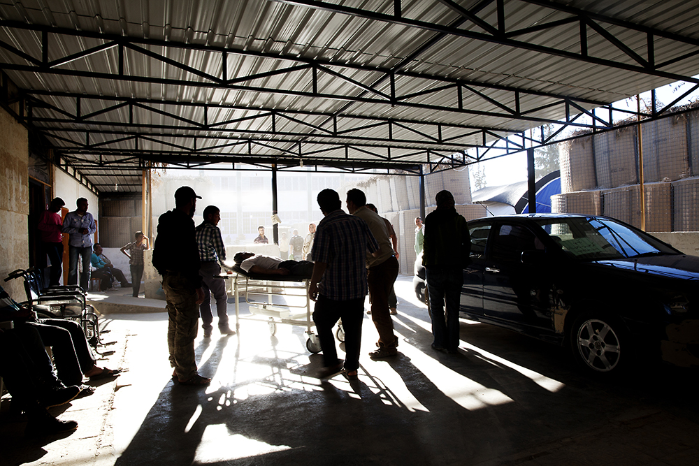

MSF

MSF
en SIRIA
Médicos Sin Fronteras tiene tres hospitales en Siria. Desde que la organización humanitaria puso en funcionamiento su primer hospital en 2012, los equipos médicos han llevado a cabo más de 109.000 consultas y 10.000 intervenciones quirúrgicas y han atendido más de 2.300 partos*. La prioridad no son solo los heridos de guerra, sino los pacientes con enfermedades crónicas y las embarazadas, dado que el sistema de salud sirio se ha derrumbado en buena parte del país. Estos hospitales gestionados por MSF se hallan en zonas del norte sirio controladas por la oposición armada, porque el Gobierno sirio no ha autorizado a MSF a trabajar en las áreas bajo su control.
En Líbano, el país que acoge a más refugiados sirios, los servicios de salud públicos están al límite. MSF lleva a cabo actividades humanitarias en el valle de Bekaa, en Trípoli, en Saida y en Chatila. Los equipos médicos tratan enfermedades crónicas, problemas de salud reproductiva y distribuyen artículos de primera necesidad.
En Jordania, la acción humanitaria se centra en la provincia de Irbid, que cuenta con la mayor concentración de refugiados fuera de campos, así como en Ramtha, cerca de la frontera con Siria, en el campo de refugiados de Zatari y en un hospital de Amán, donde se ofrece cirugía reconstructiva y a la que llegan muchos heridos.
En Irak, la intervención se concentra en las zonas vecinas a la frontera siria, sobre todo los campos de Domez, Kawargosk y Darashakran, con el objetivo de brindar atención médica y psicológica.
*Datos correspondientes al periodo entre junio de 2012 y junio de 2014.